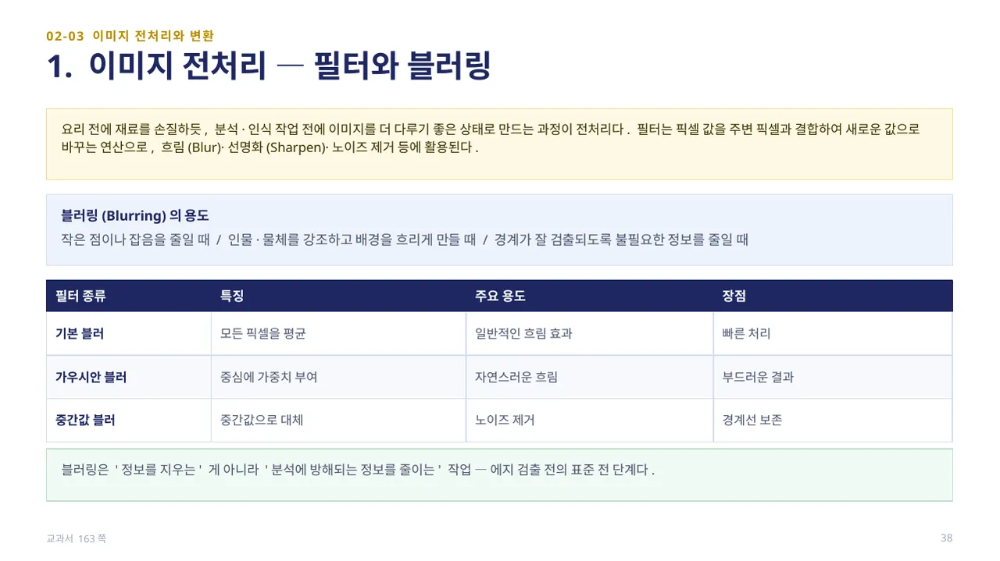
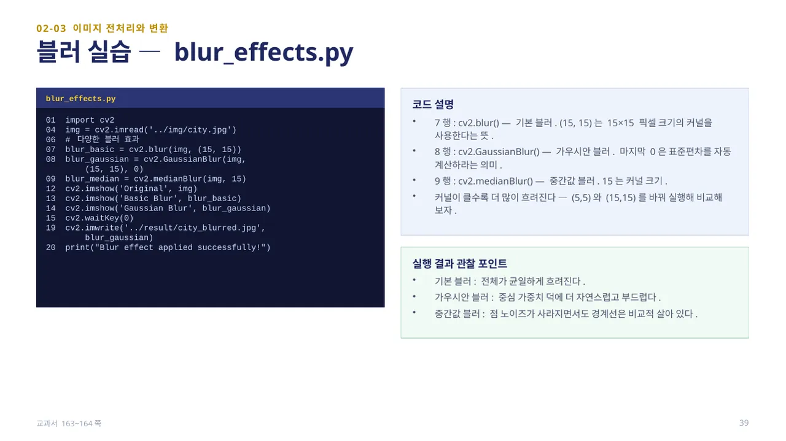
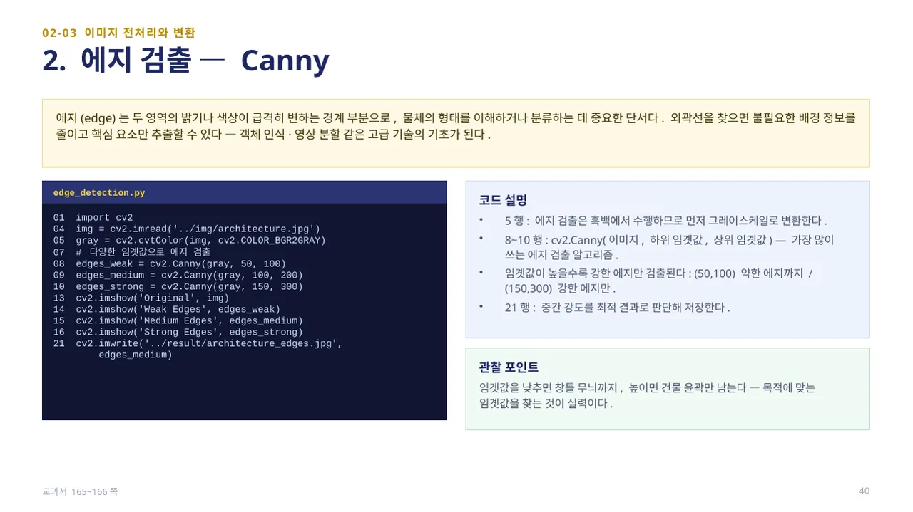
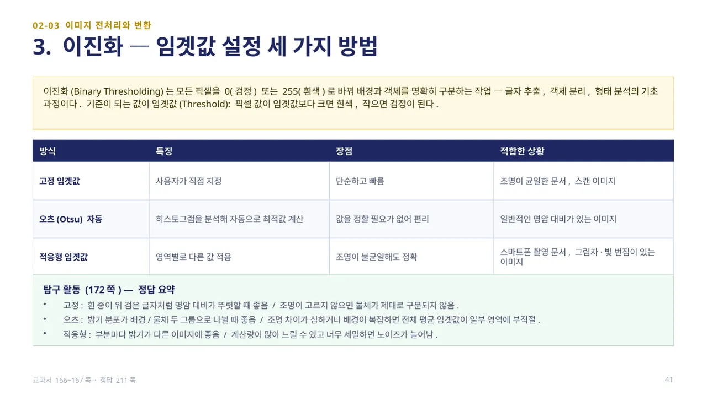
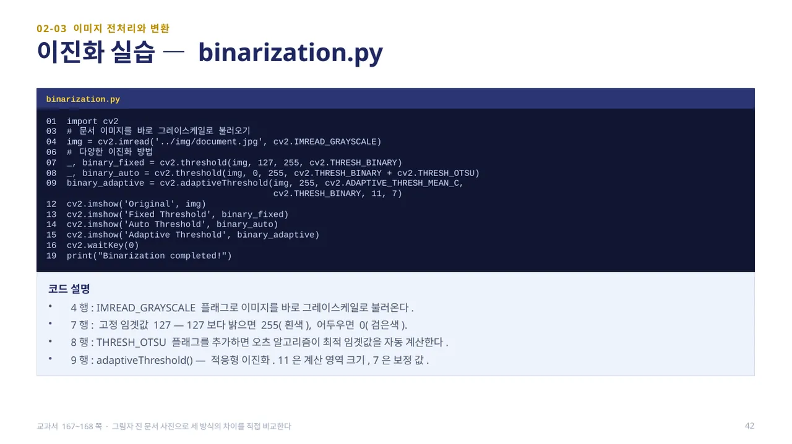

중단원 02. 컴퓨터 비전 라이브러리 활용 · 147–193쪽 소단원 03. 이미지 전처리와 변환· 163–172쪽
이 웹 주제의 연계 범위: 163–168쪽
교과서 163–168쪽
블러·에지·이진화
밝기를 부드럽게 할까요, 경계를 찾을까요?

요리 전에 재료를 손질하듯, 분석·인식 작업 전에 이미지를 더 다루기 좋은 상태로 만드는 과정이 전처리입니다. 필터는 픽셀 값을 주변 픽셀과 결합해 새로운 값으로 바꾸는 연산으로, 흐림(Blur)·선명화(Sharpen)·노이즈 제거 등에 활용됩니다.
블러링(Blurring)은 작은 점이나 잡음을 줄일 때, 인물·물체를 강조하고 배경을 흐리게 만들 때, 경계가 잘 검출되도록 불필요한 정보를 줄일 때 사용합니다. 기본 블러는 모든 픽셀을 평균해 빠르게 처리하고, 가우시안 블러는 중심에 가중치를 두어 더 자연스럽고 부드러운 흐림을 만들며, 중간값 블러는 중간값으로 대체해 노이즈를 제거하면서도 경계선을 보존합니다. 블러링은 ‘정보를 지우는’ 것이 아니라 ‘분석에 방해되는 정보를 줄이는’ 작업으로, 에지 검출 전의 표준 전 단계입니다. (교과서 163쪽)

blur_effects.py — 7행cv2.blur(img, (15, 15))는 기본 블러로, (15, 15)는 15×15 픽셀 크기의 커널을 사용한다는 뜻입니다. 8행cv2.GaussianBlur(img, (15, 15), 0)에서 마지막 0은 표준편차를 자동 계산하라는 의미이고, 9행cv2.medianBlur(img, 15)의 15는 커널 크기입니다.
커널이 클수록 더 많이 흐려집니다. 실행 결과를 보면 기본 블러는 전체가 균일하게 흐려지고, 가우시안 블러는 중심 가중치 덕에 더 자연스럽고 부드러우며, 중간값 블러는 점 노이즈가 사라지면서도 경계선은 비교적 살아 있습니다. (교과서 163~164쪽)

에지(edge)는 두 영역의 밝기나 색상이 급격히 변하는 경계 부분으로, 물체의 형태를 이해하거나 분류하는 데 중요한 단서입니다. 외곽선을 찾으면 불필요한 배경 정보를 줄이고 핵심 요소만 추출할 수 있어, 객체 인식·영상 분할 같은 고급 기술의 기초가 됩니다.
edge_detection.py — 5행에서 에지 검출은 흑백에서 수행하므로 먼저 그레이스케일로 변환합니다. 8~10행cv2.Canny(gray, 하위 임곗값, 상위 임곗값)이 가장 많이 쓰는 에지 검출 알고리즘이며, 임곗값이 높을수록 강한 에지만 검출됩니다 — (50,100)은 약한 에지까지, (150,300)은 강한 에지만 남습니다. 임곗값을 낮추면 세부 무늬까지, 높이면 윤곽만 남으므로 목적에 맞는 임곗값을 찾는 것이 중요합니다. (교과서 165~166쪽)

이진화(Binary Thresholding)는 모든 픽셀을 0(검정) 또는 255(흰색)로 바꿔 배경과 객체를 명확히 구분하는 작업으로, 글자 추출·객체 분리·형태 분석의 기초 과정입니다. 기준이 되는 값이 임곗값(Threshold)으로, 픽셀 값이 임곗값보다 크면 흰색, 작으면 검정이 됩니다.
고정 임곗값은 사용자가 직접 지정해 단순하고 빠르며 조명이 균일한 문서·스캔 이미지에 적합합니다. 오츠(Otsu) 자동 임곗값은 히스토그램을 분석해 자동으로 최적값을 계산해 일반적인 명암 대비가 있는 이미지에 적합합니다. 적응형 임곗값은 영역별로 다른 값을 적용해 조명이 불균일해도 정확하며, 스마트폰 촬영 문서나 그림자·빛 번짐이 있는 이미지에 적합합니다. (교과서 166~167쪽)

binarization.py — 4행cv2.IMREAD_GRAYSCALE 플래그로 이미지를 바로 그레이스케일로 불러옵니다. 7행cv2.threshold(img, 127, 255, cv2.THRESH_BINARY)는 고정 임곗값 127로, 127보다 밝으면 255(흰색), 어두우면 0(검은색)이 됩니다. 8행은 cv2.THRESH_OTSU 플래그를 추가해 오츠 알고리즘으로 최적 임곗값을 자동 계산합니다. 9행cv2.adaptiveThreshold(img, 255, cv2.ADAPTIVE_THRESH_MEAN_C, cv2.THRESH_BINARY, 11, 7)에서 11은 계산 영역 크기, 7은 보정 값입니다.
탐구 활동(172쪽): 고정·오츠·적응형 세 가지 이진화 방식이 각각 어떤 상황에 적용하기 좋고, 어떤 점을 주의해야 하는지 정리하면 — 고정 임곗값은 배경과 물체의 밝기 차이가 뚜렷하게 일정할 때(흰 종이 위 검은 글자) 좋지만 조명이 고르지 않으면 물체가 제대로 구분되지 않습니다. 오츠 자동 임곗값은 밝기 분포가 배경·물체 두 그룹으로 나뉠 때 좋지만, 조명 차이가 심하거나 배경이 복잡하면 전체 평균 임곗값이 일부 영역에 부적절할 수 있습니다. 적응형 임곗값은 부분마다 밝기가 다른 이미지에 좋지만 계산량이 많아 느릴 수 있고 너무 세밀하면 노이즈가 늘어날 수 있습니다. (교과서 166~168·172쪽, 정답 211쪽)
 인공지능 파이썬 실무
인공지능 파이썬 실무